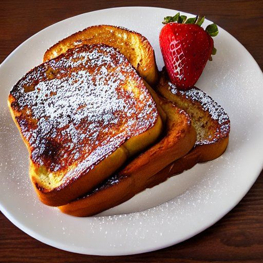

Pain doré
Préparation: —
Cuisson: —
Total: —
Ingrédients
-
3 œufs

-
2 1/2 t de lait
-
10 tranches de pain
-
3 c. à table de beurre
Instructions
Battre les œufs, puis ajouter le lait.
- 3 œufs
- 2 1/2 t de lait
Trancher 10 tranches de pain d’environ 3/4 pouce d'épaisseur.
Pour chaque portion, tremper une tranche dans le mélange œufs-lait, puis cuire dans une poêle épaisse beurrée.
Dorer des deux côtés. Servir chaud.